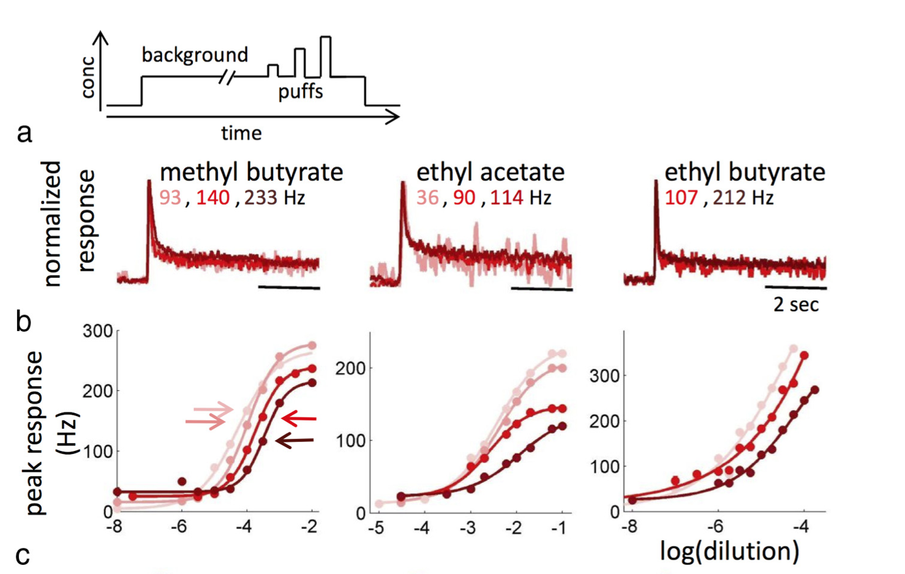
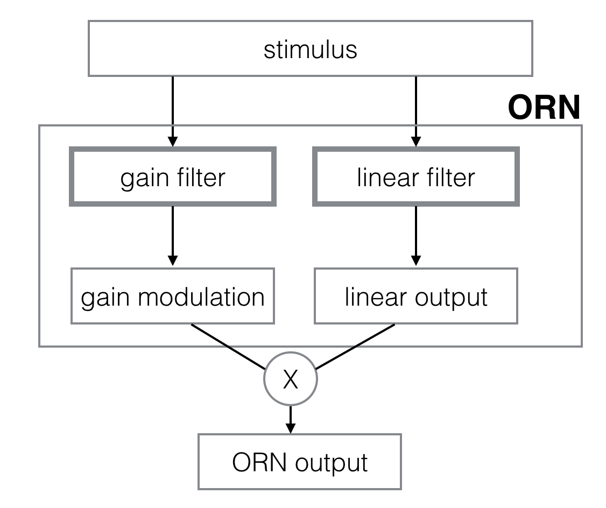
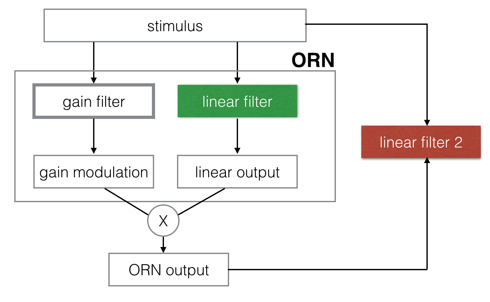
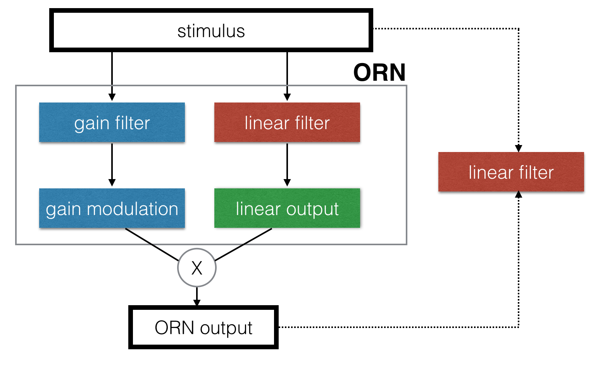
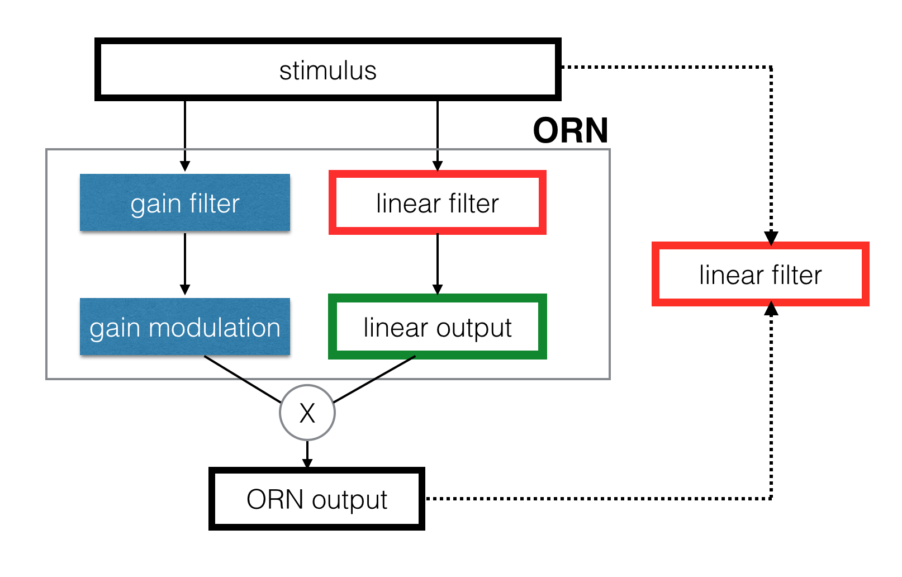
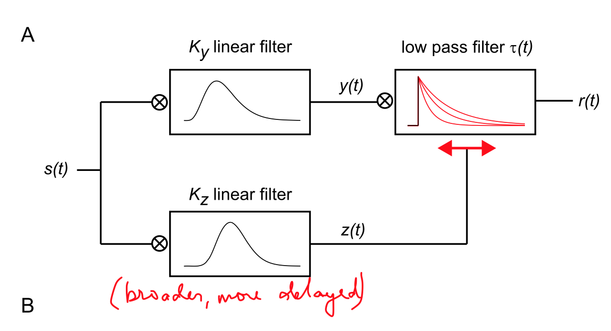

Dynamical Adaptation in ORNs
Do ORNs exhibit fast adaptation to a flickering stimulus? Can a simple dynamical adaptation model predict ORN responses to flickering inputs? Here, I take data from Carlotta's random stimulus experiments and first check how well a simple linear prediction from the stimulus compares to the data. Then, I study how the instantaneous gain of the actual ORN response w.r.t to the predicted ORN response varies with time, and try to find a objective filter from the stimulus to this instantaneous gain to correct for systematic errors in the linear prediction.
Contents
Adaptation vs. Response
Most studies into the response and adaptation properties of sensory systems are conducted as follows: a long "conditioning" stimulus was presented to the sensor, and a "probe" stimulus was used to study its response. In Carlotta's experiments, she used a constant "background" odour concentration adn then applied pulses of odor on top of it and measured response to this.

Most neuron responses are generally non-linear to the amplitude of the stimulus applied. The LN model captures "gain compression" in the non-linear function of the model, and "true adaptaiton" is the differential response to pulses after these long conditioning pulses.
However, there is no fundamental basis for disambiguiating these two phenomenon.
Adaptation and Response: Dynamical Adaptation
Here, the adaptation and response of the neuron are considered together, and the neuron can be modeled as two filters that act on the input stimulus. One gives a linear response, and the other, the gain filter, modulates the linear response as a function of time in response to the stimulus. We expect the gain filter to be slower than the other, to account for adaptation.

Synthetic Data: Sketch of Phenomenon
In the following section, I will consider some synthetic data, and some synthetic filters, and see how these filters transform the inputs. I will then look to see if there is some characteristic relationships between the system output and the linear output.
Consider some hypothetical stimulus being presented to a ORN, which could look like this:

Now, consider that the linear response of a ORN can be captured by a linear filter, that looks something like this:

Thus, the linear response of the ORN to this stimulus will look like this:

Now, consider that a second filter exists that modulates the gain of the previously described linear filter, and that it looks something like this:

The output of the gain filter is the instantaneous modulation of the gain of the linear filter, and looks something like this:

The output of the linear filter (black) is compared to the gain modulated output (red). In some times, the output is lower, and in others, it is higher, depending on the average stimulus in the preceding window.

Now, the gain filter does not affect the linear filter at all, because the gain filter modulates a multiplicative factor on top of the linear filter output. We can check this by calculating a new filter from the PID to the output of the ORN, and comparing it to the linear filter, as follows:


Synthetic Data: Signature of Dynamical Adaptation
In our toy model, where there are two filters, one controlling the gain of the other, we can characterise how the system responds to high and low stimuli as follows. We average the stimulus over some history window, and then look at how the system as a whole responds to the lowest 10% and highest 10% of smoothed stimuli, and compare it to the simple linear output of the system.


Real Data: Signature of Dynamical Adaptation
To check if this model is valid, or useful, we look for this signature of dynamical adaptation (higher gain to small stimuli than to large stimuli) in real data. To do this, we have to solve the following inverse problem:

Step 0: this is what we have to work with: the known stimulus to the ORN, and the known response from the ORN.

First, we find the linear filter from the stimulus to the ORN output.

Now that we know the linear filter, we can estimate the linear output using this filter.

Now, we check if the same signature of dynamical adaptation is present in real data:

The following plot shows how the slope of the lines of best fit, or the instantaneous gains, varies with the history length. The plot on the right shows the goodness of fit for each fit, indicating the regions where the fit is meaningful.

Real Data: Inference of Gain filter
Now, we are given the input (the odour stimulus) and the output (the ORN response). We just calculated the linear filter and used it to estimate the linear output. The only things left are to find the gain filter and the gain modulation.

We can calculate the gain modulation from the output of the ORN and the linear prediction. However, that is noisy, and we can smooth it to remove high-frequency noise.

How does smoothing the gain affect our ability to correct the linear prediction? The following plot shows how the r-square of the corrected linear prediction varies with smoothing the gain. Also shown is the line which indicates the linear prediction of the uncorrected simple linear prediction.

For with various smoothing of the instantaneous gain, we find the best gain filter for each and plot it below. Unfortunately, it looks pretty bad:

How well can we predict the smoothed gain vectors using these filters and the stimulus? The blue dots show the theoretical maximum improvement of linear fit by gain modulation as a function of smoothing window. The black dots show the actual improvement (or lack thereof) from the estimation of the gain filter and the gain modulation. No point is above the horizontal line, which is the simple linear filter.

Real Data: Fitting the DA model
